1. Misimu Hari Ini
Minggu lalu kamu membuktikan bahwa library itu hemat waktu. Sekarang levelnya naik: kamu akan membangun program nyata yang menghitung anggaran kain untuk dekorasi panggung PKS sekolah kita.
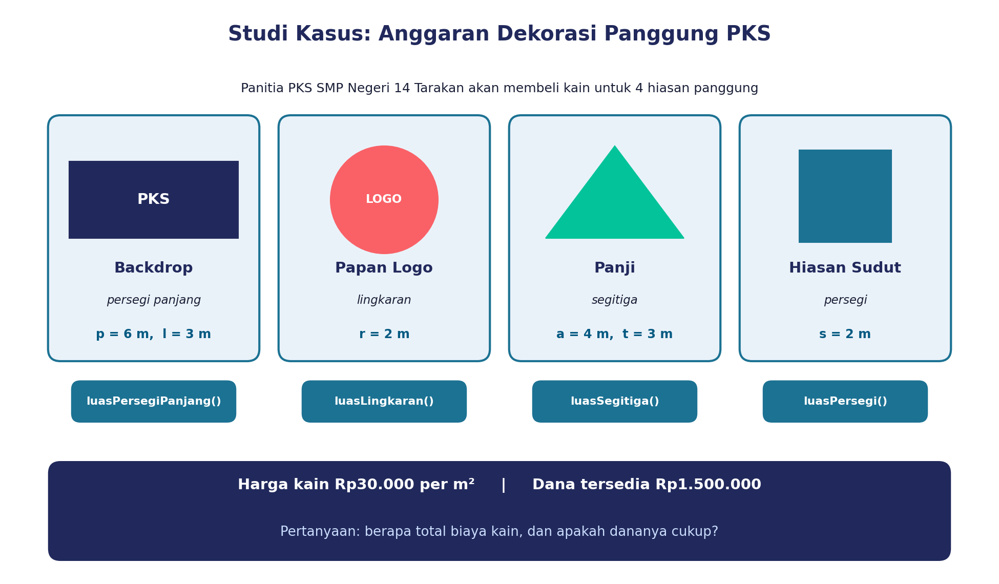
• membaca kontrak modul dan memanggil function/procedure dengan benar
• menggabungkan dua library + blok standar dalam satu program
• menguji, mencari bug, dan memberi masukan ke teman
2. Ingat Lagi: Library Itu Apa?
Library
Kumpulan modul siap pakai yang bisa dipanggil ulang.Library standar
Bawaan aplikasi: blok ulangi, jika, operator.Library eksternal
Buatan sendiri/orang lain, mis.Bangun_Datar.Manfaatnya: reusability (dipakai ulang), abstraction (tak perlu tahu isinya), efficiency (cepat dan minim salah).
3. Analogi Warung
Di warung bakso kamu membaca menu, memesan dengan menyebut menu dan level pedas, koki meracik di dapur (kamu tak perlu tahu resepnya), lalu pesananmu datang dan kamu taruh di meja. Persis seperti memakai library!
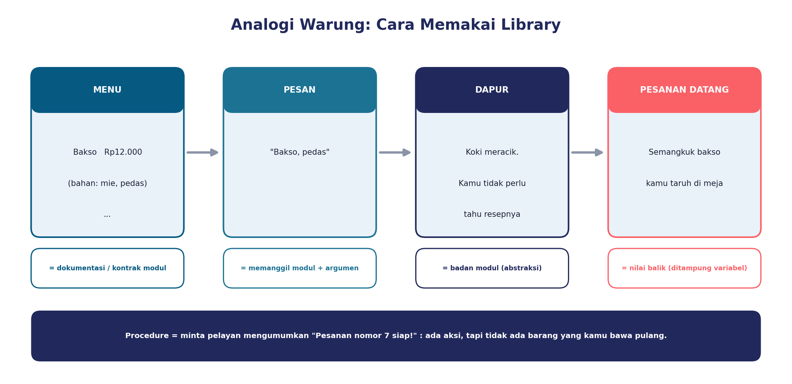
4. Kenali “Kontrak” Modul
Kontrak adalah catatan singkat: nama modul, jenis, parameter (data yang harus kamu berikan, urutannya penting), dan nilai balik (hasil yang dikembalikan).
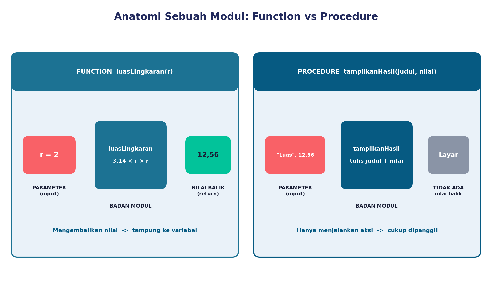
| Modul | Jenis | Parameter (urutan) | Nilai balik | Isi |
|---|---|---|---|---|
luasPersegi | function | s (sisi, m) | luas (m²) | s × s |
luasPersegiPanjang | function | p, l (m) | luas (m²) | p × l |
luasSegitiga | function | a, t (m) | luas (m²) | ½ × a × t |
luasLingkaran | function | r (jari-jari, m) | luas (m²) | 3,14 × r × r |
tampilkanHasil | procedure | judul, nilai | — | menulis di layar |
hitungBiaya baru | function | luas, harga (Rp/m²) | biaya (Rp) | luas × harga |
hitungSisa baru | function | anggaran, biaya (Rp) | sisa (Rp) | anggaran − biaya |
5. Tiga Langkah Memakai Library
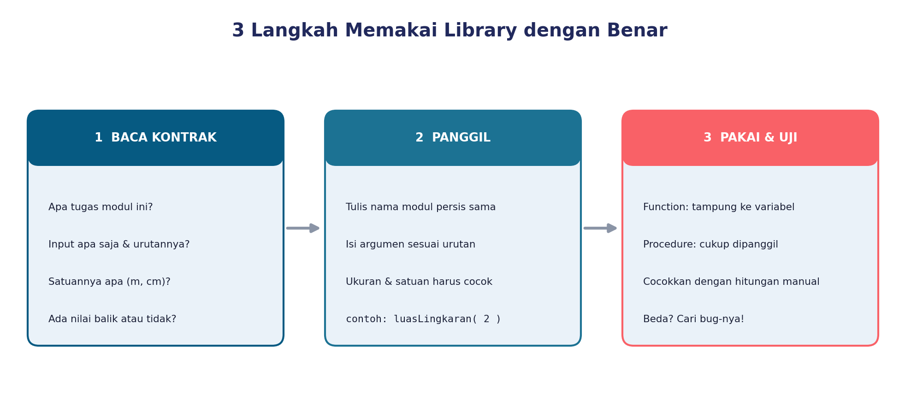
Contoh: papan logo berjari-jari 2 m. Kontrak meminta r, maka panggil luasLingkaran( 2 ) dan simpan hasil 12,56 ke totalLuas.
6. Coba Panggil Modul
Pilih modul, isi argumen sesuai kontrak, lalu tekan Panggil. Coba juga isi argumen yang salah!
7. Dekomposisi: Pecah Masalahnya
Masalah besar: hitung total biaya kain dan cek apakah dana cukup. Pecah jadi 4 sub-masalah, lalu cocokkan dengan modul yang ada.
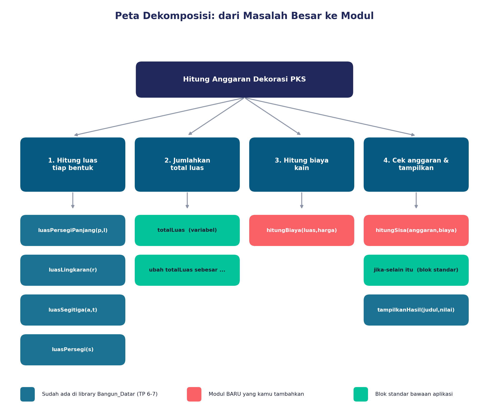
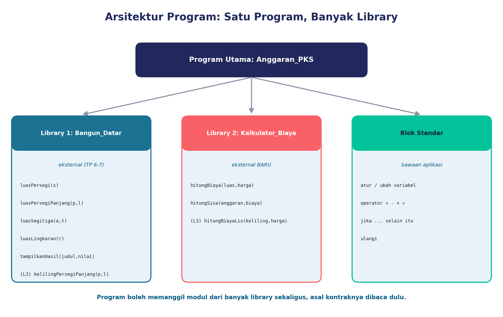
8. Bedah Program Anggaran_PKS
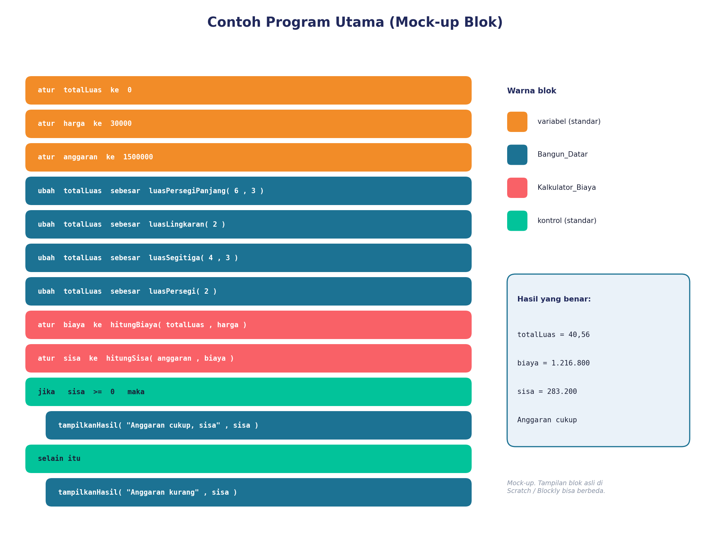
9. Tiga Level Tantangan
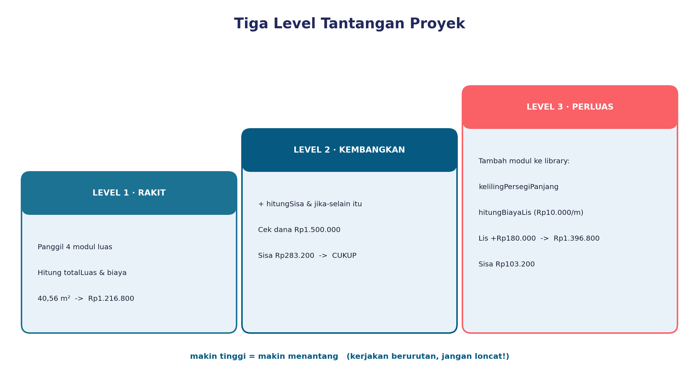
Petunjuk Level 3 (buka bila perlu)
TambahkankelilingPersegiPanjang(p, l) ke Bangun_Datar dan hitungBiayaLis(keliling, hargaPerMeter) ke Kalkulator_Biaya. Backdrop 6×3 m → keliling 18 m → lis Rp10.000/m = Rp180.000. Total jadi Rp1.396.800, sisa Rp103.200.10. Lab Bug: Jadilah Detektif
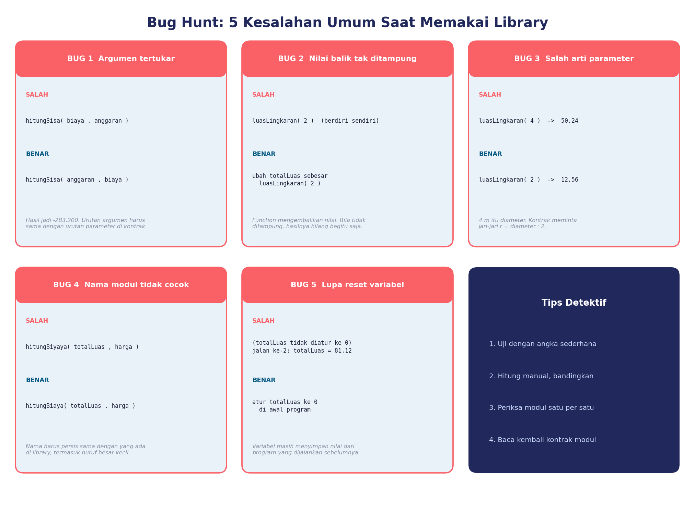
Jalankan program Anggaran_PKS
Hasil yang benar: 40,56 m² · Rp1.216.800 · sisa Rp283.200.
Mode bebas — aktifkan bug lalu lihat akibatnya:
Mode detektif
Komputer menyembunyikan satu bug. Jalankan program, amati hasil yang janggal, lalu tebak bug-nya.
Tabel uji
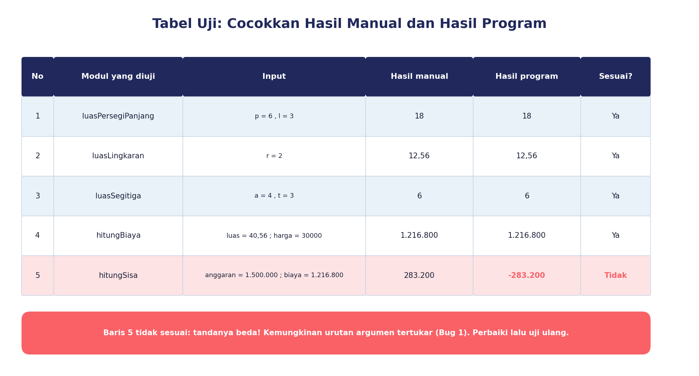
11. Tinjau Teman: Two Stars & a Wish
Tukar program dengan kelompok lain. Beri dua bintang (hal yang sudah bagus) dan satu harapan (saran perbaikan). Pakai bahasa santun dan spesifik.
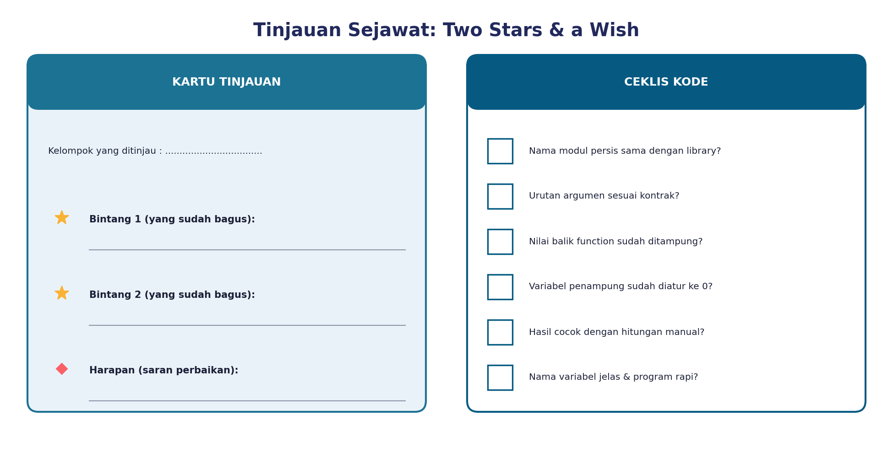
Tanpa komputer? Pakai Kartu Modul
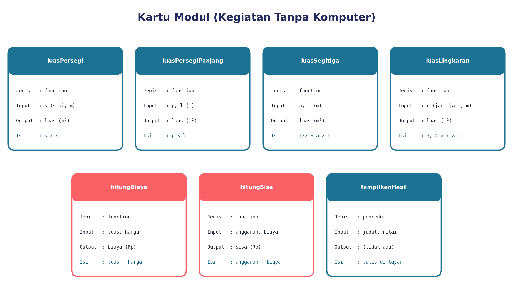
12. Kuis Dadakan
13. Rangkuman
- Baca kontrak modul dulu: nama, parameter (urutan!), satuan, nilai balik.
- Function → tampung hasilnya. Procedure → cukup panggil.
- Satu program boleh memakai banyak library + blok standar.
- Modul baru boleh ditambahkan tanpa merusak modul lama.
- Selalu uji dengan tabel uji, lalu cari bug dengan tenang.